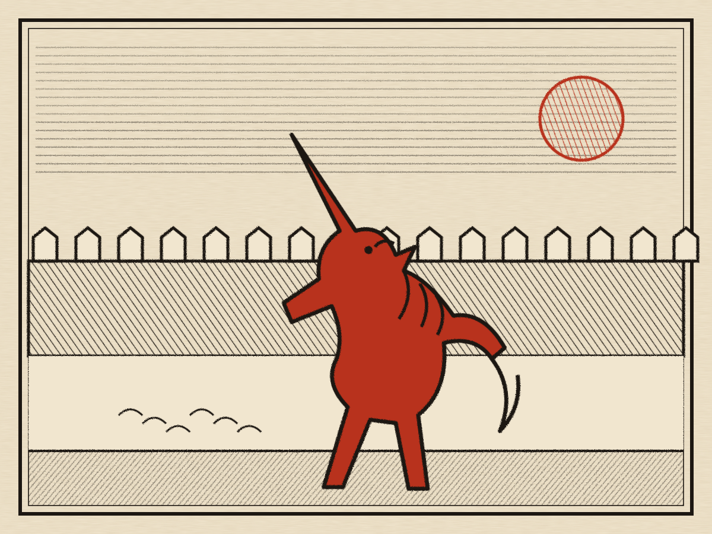
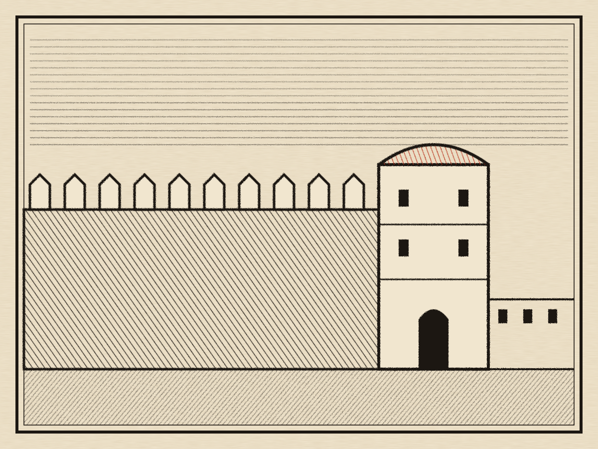
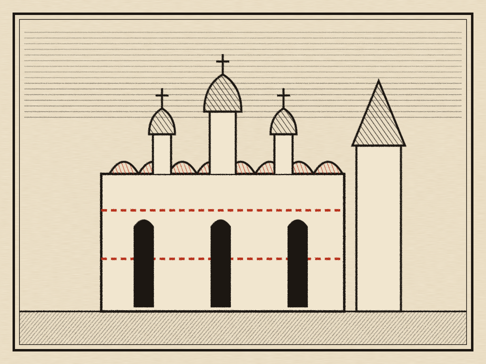
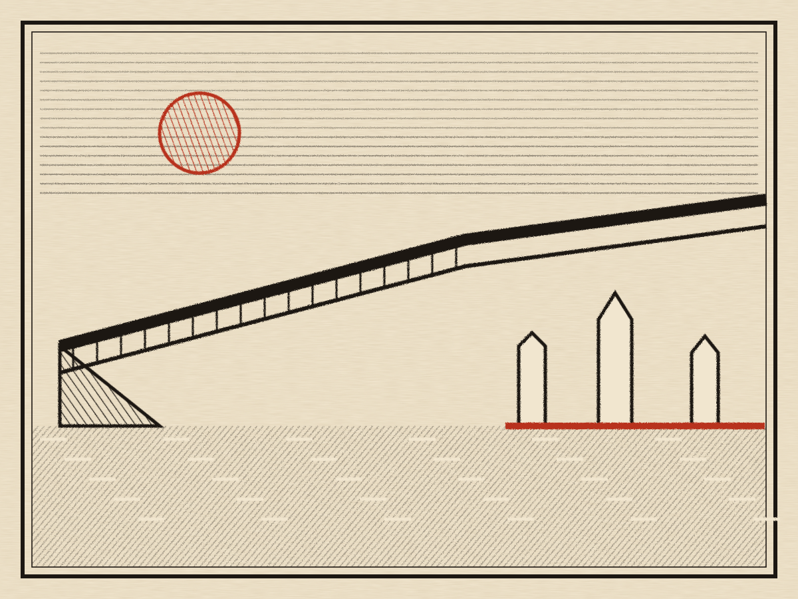

Англичане искали Китай
Корабль Ричарда Ченслера искал северный путь в Китай и Индию, а пришёл в Белое море. Капитан добрался до Москвы, и началась торговля с Англией.
1887 год, типография на Никольской. Вы — новичок-наборщик и по обычаю печатаете шуточную фальшивку — лист «Сбежал единорог!». Старый корректор не должен найти в нём ни одной ошибки.
Только в листе новичка каждый год находят ошибку, которой он не набирал. До листа дотрагиваются трое. Кто её подбрасывает? Соберите подробности на улицах — и глядите в оба.

Сенька, подмастерье на год старше вас, уже набрал лист. Единорога «видели» у стены, у ворот, у биржи, у часовни и у Английского двора. Только подробности Сенька оставил пустыми: их добываете вы — на улицах, своими глазами.
Корректор Аким Ферапонтович учуял розыгрыш и идёт по тем же улицам на шаг позади. Всё, что сочтёте вы, перечтёт и он. Провести лист мимо него можно одним способом: не соврать ни в одной подробности.
А до листа дотрагиваются трое: Сенька набирает, Федька моет литеры, корректор читает оттиск. Кто-то из них и подбрасывает ошибку.
В готовом листе будет ровно одна неправда. Найдёте её и скажете, чьей она руки, — вас примут в цех.
Сбежал единорог!
Ночью с фасада Синодальной типографии, где время показывают , ушёл каменный единорог.
Его видели у стены Китай-города, которой лет, — он перескочил её, не задев зубцов. Потом он прошёл под воротами с башенками…
Последний раз его видели над рекой.
Печатано в Синодальной типографии. Подлинность подробностей подтверждаем.
пропуски — на месте, не выдумывай! С.«Аким Ферапонтович очки протирает дважды. Если протёр трижды — пиши пропало»
Шесть мест из девяти, не по порядку — в оттисках с наших досок. Куда идти дальше, подскажет квест.

Старая крепостная стена у гостиницы «Метрополь». Сколько ей было лет в 1887 году?
Звери с фасада на Никольской. По нашей шутке, один из них этой ночью сбежал.
Сенька набрал его строку в трёх вариантах и не помнит, какой верный.
Здесь торговали и спорили о ценах. А кто сидит в этом здании теперь?

Ещё одна строка в трёх вариантах. Где же она стоит?

Последний раз единорога видели здесь.
Шуточный лист сойдёт за настоящий, только если в нём верна каждая подробность. Добывать подробности вам: старый корректор знает эти улицы наизусть.
На каждой точке в гранке пропуск: дата, число, деталь фасада, надпись. Дважды Сенька набрал строку в трёх вариантах — выберите верный. Застряли — смотрите правку на полях: подсказок три, третья — ответ. По дороге корректор трижды пришлёт записку: он проверяет то же, что и вы.
Один код доступа на всю компанию. Квест в разработке, о старте объявим в Telegram.
Три минуты от метро «Театральная» и «Площадь Революции». Квест открывается в браузере телефона.
Каждая точка — пропуск в листе, который вы заполняете тем, что видно на месте.
В финале лист напечатан. В нём одна ошибка: найдите её по памяти и назовите, кто её подбросил.
В паре кварталов от Кремля сходятся истории из Англии, Италии и Болгарии.
Корабль Ричарда Ченслера искал северный путь в Китай и Индию, а пришёл в Белое море. Капитан добрался до Москвы, и началась торговля с Англией.
Иван Грозный отдал палаты на Варварке английской Московской компании. Теперь это Старый Английский двор.
На Печатном дворе на Никольской Иван Фёдоров и Пётр Мстиславец закончили «Апостол» — первую точно датированную русскую печатную книгу.
Под Плевной, нынешним Плевеном в Болгарии, шло одно из главных сражений Русско-турецкой войны. Память о нём стоит у Ильинских ворот.
Стену Китай-города, как и многое в Кремле, строил мастер из Италии.
Китай-город — старый торговый квартал сразу к востоку от Кремля: Никольская, Ильинка и Варварка, а у реки — парк «Зарядье».
Точного ответа нет. По одной версии, от «кита» — вязки жердей, которой укрепляли вал вокруг посада. По другой, от древнего корня со значением «укреплённое поселение», «город»: в тюркском «катай» — «город», «крепость».
С 1967 по 2006 год в Зарядье стояла гостиница «Россия», а в 2017 году здесь открыли парк. Его Парящий мост выходит над набережной; по данным строителей, он выдерживает нагрузку больше 240 тонн.
Квест начинается у метро «Театральная», а заканчивается в «Зарядье», в 10 минутах от метро «Китай-город».
Старт у фрагмента стены Китай-города рядом с гостиницей «Метрополь», в трёх минутах от метро «Театральная». Финиш на Парящем мосту в «Зарядье», до метро «Китай-город» около 10 минут.
По нашей оценке, 1,5–2 часа: 9 точек и около 2,5 км пешком.
Да. Основные загадки рассчитаны на взрослых и подростков, для младших есть задания по желанию: найти, сосчитать, рассмотреть.
990 ₽ за квест: один код доступа на всю компанию. Хватит одного телефона.
Квест в разработке. Дату запуска объявим в Telegram-канале «Дворами».
Нет. Все загадки решаются снаружи: по стенам, фасадам и надписям.
Тогда финал пройдёт у реки в парке: квест подскажет, куда встать.
Фрагмент стены Китай-города у «Метрополя», ворота Третьяковского проезда, здание Синодальной типографии со львом и единорогом на Никольской, Заиконоспасский монастырь, здание биржи на Ильинке, часовню героям Плевны у Ильинских ворот, Старый Английский двор на Варварке и Парящий мост в «Зарядье». Всё это на маршруте квеста.
Да. Квест открывается в браузере телефона, дорогу к точкам показывает карта. Зарядите телефон перед стартом.
Открыть правку на полях. Подсказок три, и последняя — это ответ.
Квест в разработке, взять дело можно будет здесь. Напишем в Telegram, как только лист можно будет набирать.
Исторические факты на этой странице сверены по публикациям: